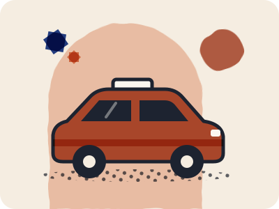

Your airport arrival: separate flight information from pickup arrangements
Confirm your flight information, pickup agreement and final route separately.

Landing in Casablanca? The Casablanca airport guide compares the train and the Aérobus, with dated fares and sources. This page covers arrival preparation for any airport.
Updated 29 Sep 2026 · Original preparation advice and limited primary-source summaries. No local field verification.
Short answer: Check airport or airline information for your flight, and confirm your pickup arrangement directly with the person providing it.
Know where each answer comes from
ONDA's Marrakech airport information includes an assistance contact for flight and airline information. That is separate from a private driver's agreement to meet you.
Before you travel
Our preparation suggestions:
- Save your flight details, accommodation address and pickup instructions offline.
- Ask for a precise meeting point and how to recognize the driver or representative.
- Confirm what happens if the flight is delayed or you cannot find each other.
- Agree the total for your group, luggage arrangements and any waiting charges.
- Ask the accommodation whether the vehicle can reach its entrance; request final access instructions if it cannot.
A message you can adapt
“Please confirm the exact meeting point, how we will recognize the driver, the total price for our group, and what happens if we are delayed. Can the vehicle reach the accommodation entrance? If not, please explain the final route and any assistance charges.”
Next step: Add these confirmations to your existing arrival checklist.
Keep the essentials together.
Use the free checklist to prepare and print a copy.
Continuing by rail? Read the train booking checklist.